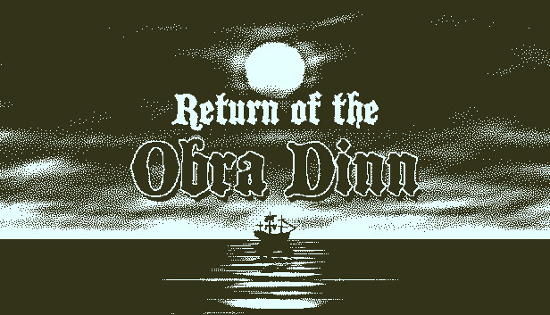
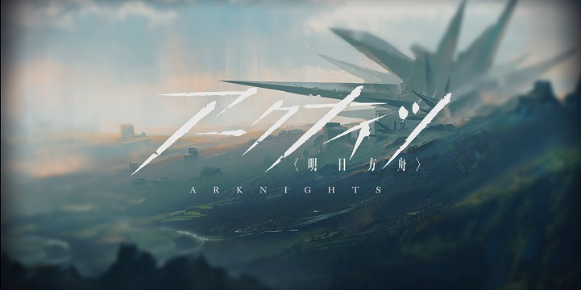

好きなゲーム
オブラディン号の帰還

5年前に消息を絶った貿易船「オブラ・ディン号」で起きた事件の真相を追う推理アドベンチャー。
保険調査官として船に乗り込み、乗組員たちの"最期の瞬間"を手がかりに、この船で起こった真相を解き明かしていく。
独創的なビジュアルと、本格的な推理体験が高く評価されている。
Outer Wilds

崩壊を繰り返す宇宙を舞台に、失われた文明「Nomai」の謎を追うオープンワールド宇宙探索ゲーム。
あなたは小さな宇宙船に乗り込み、自由に惑星を巡りながら、この宇宙に隠された真実へと迫っていく。
刻々と変化する星々と、知識によって広がっていく探索体験が魅力。
アークナイツ

致死的な感染症が蔓延る過酷な世界を舞台にした、重厚なストーリーが魅力の戦略ゲーム。
差別や戦争、理想と現実といったテーマを描きながら、それぞれの信念を抱えたキャラクターたちの物語が展開される。
緻密に作り込まれた世界観と、心を揺さぶるシナリオが魅力。